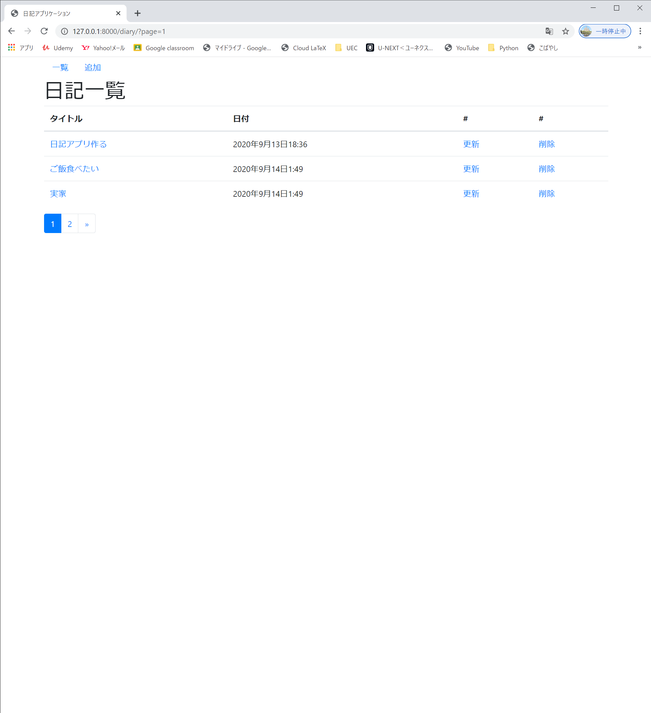
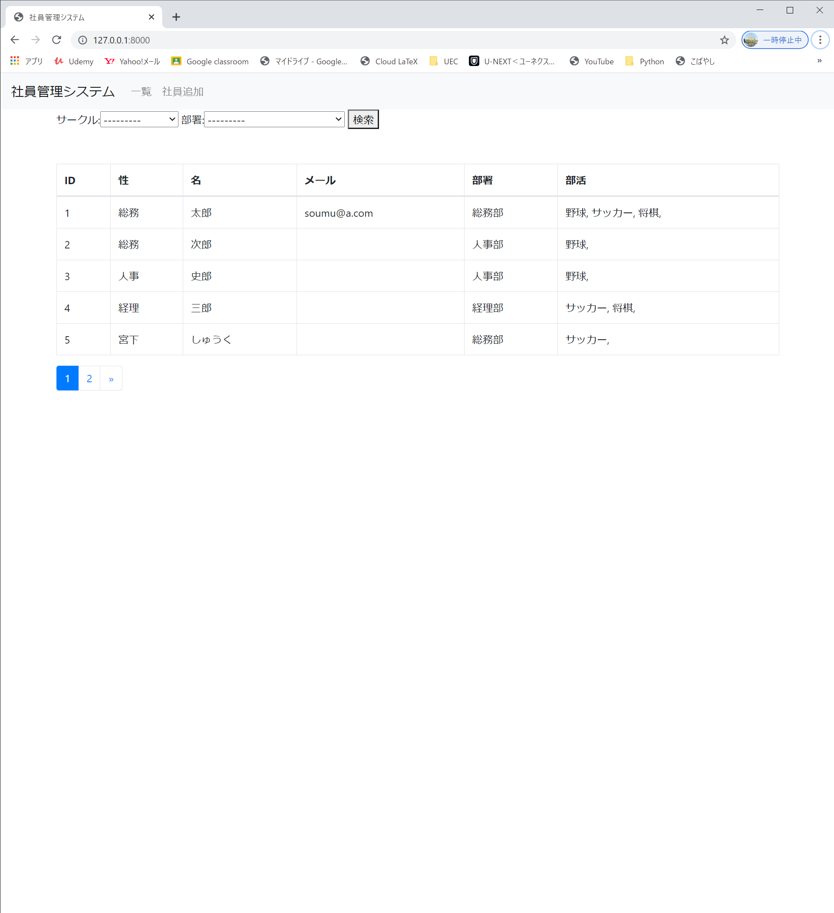

プロフィール
大学：電気通信大学(東京都調布市)
学部：Ⅰ類 コンピュータサイエンスプログラム
趣味：バレーボール、スノボ
プログラミングについての技能、経験
インターンシップ、アルバイト
1.長期のインターンシップで
Webアプリケーションの機能改修、OS差替のプロジェクトに参加(2020年10月より5ヶ月間)
2.E-lerningシステムの開発のアルバイト(2021年4月より)
今までに使ったことのある言語、ミドル、OS(得意な順番)
1.c,c++
2.PHP
3.Python
-Djangoフレームワーク
4.Java
5.Ruby
6.Lisp
7.HTML,CSS
8.Ubuntu(サーバー用途)
9.Apache
10.PostgreSQL
大学の講義で学んだこと
1.プログラミング言語（Ruby,C言語,Java,Lisp）
2.コンピュータアーキテクチャ
3.コンピュータネットワーク
4.数値計算
5.オペレーティングシステム
6.言語処理系（字句、構文解析）
7.アルゴリズム（経路探索、整列、データ構造など）
8.オペレーションズリサーチ(動的計画法、ゲーム理論など）
9.オートマトン
10.ヒューマンインタフェース
11.数学（微積分、線形代数、離散数学、確率論）
12.物理化学（高校以上大学未満）
13.論理回路、電気回路
14.中国語
自主制作物(-Djangoで作成)
1.日記Webアプリ

2.社員管理Webアプリ

行ったことはDjangoを用いての開発～AmazonEC2の仮想サーバーを用いて公開できたところまで